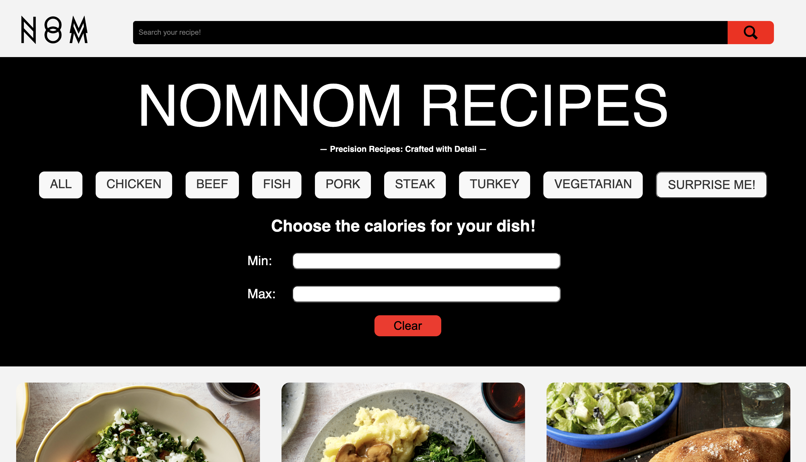
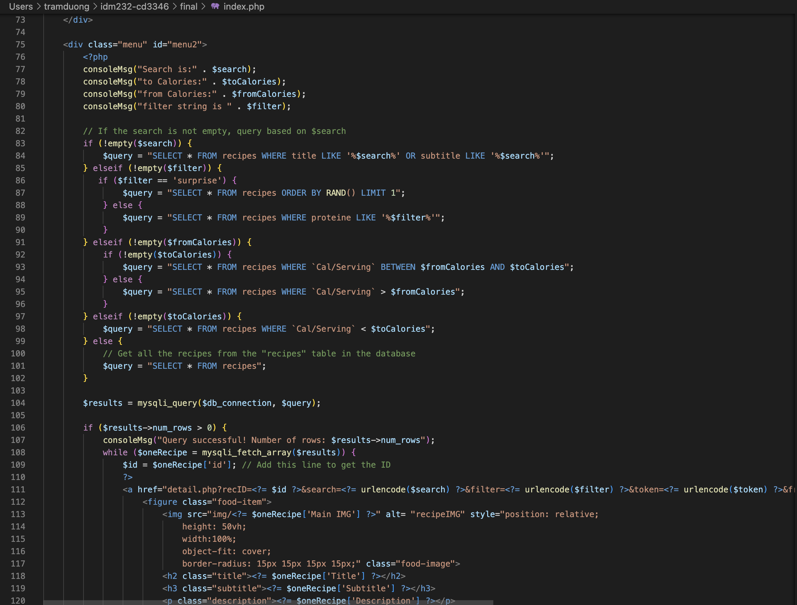
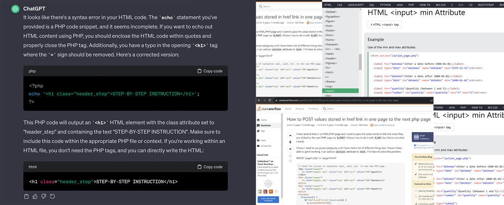
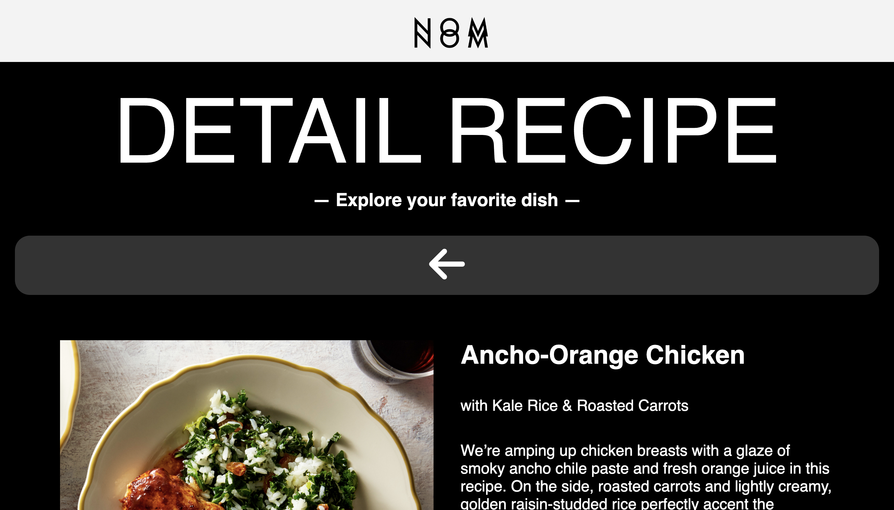

The genesis of this project stems from the imperative need to delve into the realm of server-side technologies web designs and leverage their capabilities, specifically PHP, to construct an interactive and data-driven product. Tasked with the challenge in my IDM 232 Scripting for Interactive Digital Media II class, the class aims to transform theoretical understanding into practical application by employing server-side technologies to pull data from a SQL Database and construct a scalable, interactive, and data-driven website.
With that being the case, for my final project the class has reached a consensus to create an interactive recipe website that integrates a SQL databases to gives it a scalable aspect and also serves as a way to guides me step-by-step on how addresses lies in the gap between theoretical knowledge and practical implementation of server-side technologies, for the basics at the very least such as $_POST, $_GET, SQL queries and how to combine Javasrcipt with PHP. As an aspiring UI/UX professionall, the aim is to bridge this gap effectively, measured by the creation a robust database system, implementation of server-side scripts to fetch and display dynamic content, and ensuring a user-friendly interactive experience. Such objectives can be measured by the following metrics: Page Load Time, User Engagement, Database Query Efficiency, and Scalability.

Embarking on my project, the crux of the challenge transcended mere database design, echoing the sentiments of numerous others. In this project, the spotlight shifted from aesthetic choices and design to efficiency and scalability, where my proficiency with HTML, CSS, and JS, was rendered useless . As the saying goes, "the devil is in the details," and indeed, the minutiae became paramount. I had to seamlessly integrate PHP code into conventional HTML, a task that demanded ingenuity and precision.
The journey resembled a rollercoaster, progressing through Alpha, Beta where we have to create the wireframe for the website before integrating our database for our finute stretch of the project via PHP. The creation, implementation, and orchestration of PHP and JavaScript for navigation effects added layers of complexity. The thrill of bringing ideas to life through the marriage of HTML, CSS, JS and PHP was complemented by the challenge of crafting effects that enhanced user navigation.
Managing the browser's past state using $_GET introduced a novel complexity. Filtering and searching data required a nuanced understanding of $_POST and $_GET, and the strategic use of global variables became crucial for querying the database effectively.
In the midst of the coding intricacies, the project demanded not just technical finesse but the artistry of crafting a seamless narrative within the user experience. Each click became a pivotal point in the user's journey, and the harmonious interplay of PHP, JavaScript, and HTML wove a compelling story.

Let's get into the specifics of how I made my way through the Alpha, Beta, and Final steps of linking my html with php code. My journey began wit the wireframe of the website. I searched through many websites to find inspirations for my recipe page. In my opinion, the goal was to find a website that has many aesthetic and interactions while also balancing it with scalability.
The real challenge started once I had to dig deep into how to actually make my php code works with my interaction. For these studies to become real, useful interactions which yield precise results under the fastest time, it was time. I started doing study on CodePen, YouTube, W3Schools, Stack Overflow, and other sites, learning from code snippets, answers, and programming tips. By getting help from other people, I learned how to connect to my database online, offline, how to make my javascript code work with my php, how to utilize $_POST and $_GET to connect between different pages which yields similar results to the one that we see online everyday.
Adjusting, changing, debugging, and making things better were all part of the writing process. StackOverflow became my virtual debugging friend and helped me when I wasn't sure what to do. Once the long coding session was over, the code was carefully checked and cleaned up before it was sent in.
Basically, the process wasn't just about writing code; it was about understanding the minute details of server-side technologies and how to best utilize them to make my website run fast while still being aesthetically pleasing.

The solutions that came out of the Alpha, Beta, and Final stages. Each one shows how my skills in applying server-side technologies have grown and improved.
Alpha - Connectinng to database both online and offline. Setting up echo commands for main menu page:
I started to understand and build php command for my main menu page. Upon deciding my wireframe from my previouse work, I applied for loops in conjunction with database SQL queries to perform echo command for each recipe, pulling data from the database and perform filtering and search technique using $_POST and $_GET method in a php file. This led to a sleek and interesting search bar and filtering bar that the user can use to filter out their favorite protein and ingredientes to use for their recipe. Also I got feedback from Professors and Peers to develop it.
Beta - In depth recipe page with redirection from main menu:
The recipe page was a more difficult task when I moved into the Beta phase. The requires me to utilize the $_GET global variable to get what the user is clicking on and perform a search query based on the id of the recipe in the database. This time, the learning curve got steeper as I have to remember the past state of my main menu page in order to return to it one I hit the back button in the "detail" page. The solutions requires the use of $_GET variable to be embedded in the main menu link in order to rember what the user has filtered.
Final - Surprise Me, Search, Calories Form:
All the lessons learned in the Alpha and Beta stages came together in the Final process to make a sophisticated Recipe page. This small interaction was more than just search and click: it included various javascript code to reset the form, perform search on change and remember the state of the search on it is commited. In addition, the surprise me button was hard in the Alpha and Beta stages where we have to do a random search and also remember the state of the search, but knowledge from them helped build up to this big finale as I included a token as a $_GET variable in the search and make it goes random. At the end of the day, this one need the most programming skills and I actually got into trouble with coding for the Final.

Now the credits are rolling. It wasn't enough to just meet deadlines and submitting homework; we had to crush the goals of the class we set as well, utilizing our database to the max and filling upp our website with interations The website ahve 3 main ways to search: via the search bar, the filter, and the calories form. We added many microinteractions and we tracked the effect and got feedback from Professors and Peers. This wasn't just for show; the lessons we learned were like extra scenes after the credits; they helped us figure out what worked, what didn't, and how to get better next time.